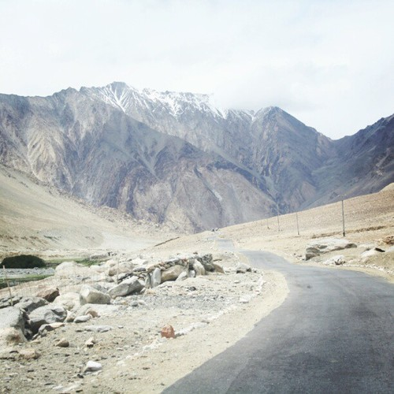
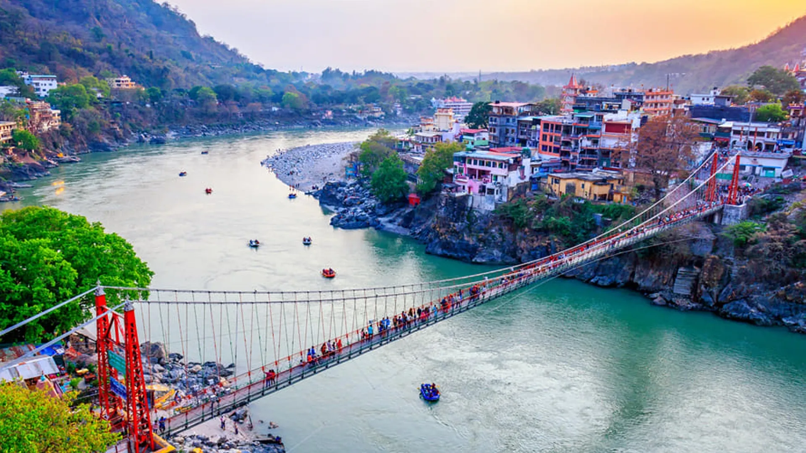
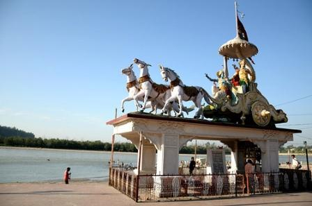
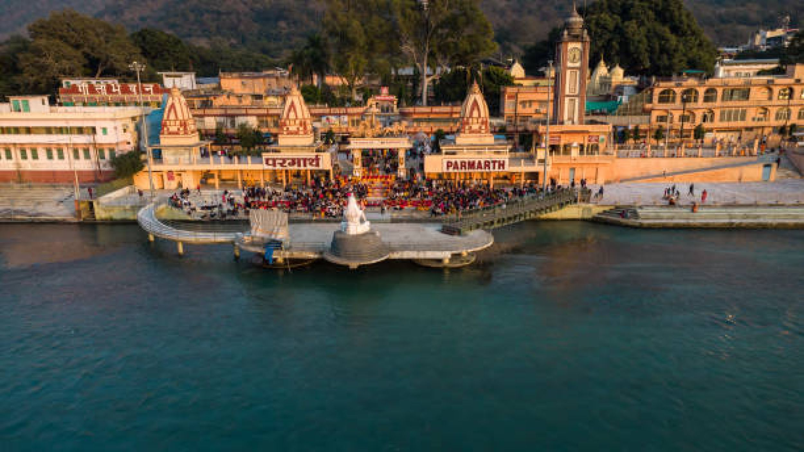
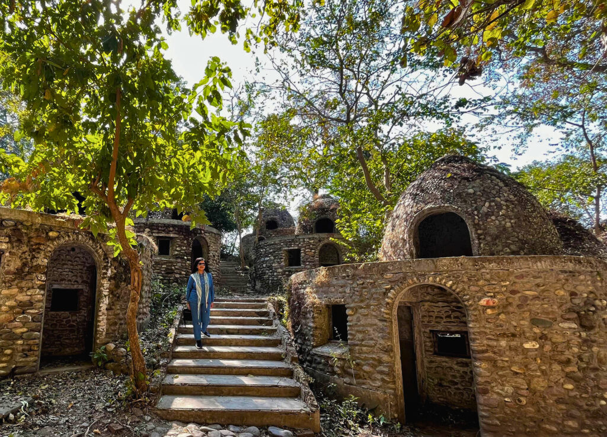
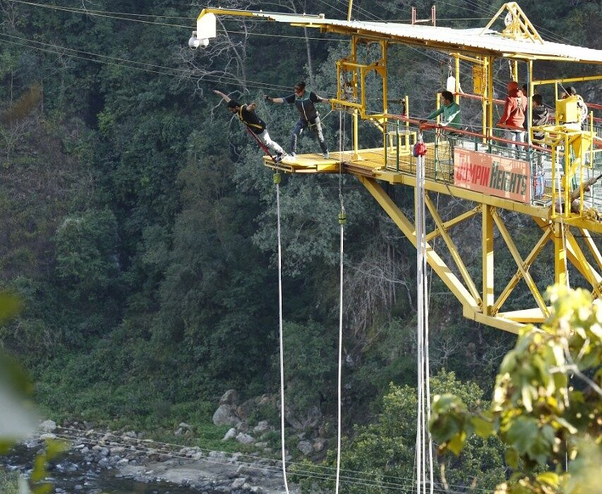
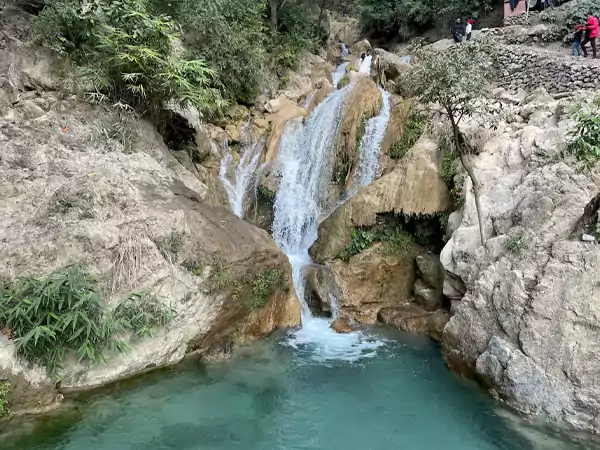
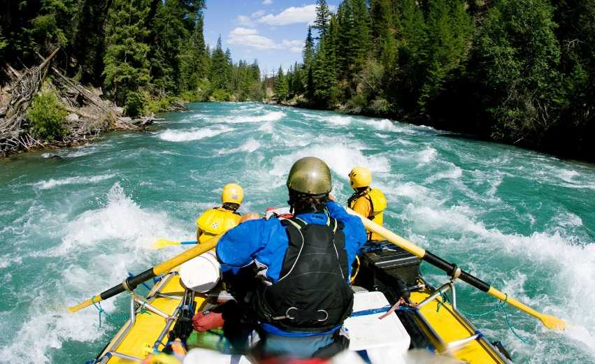
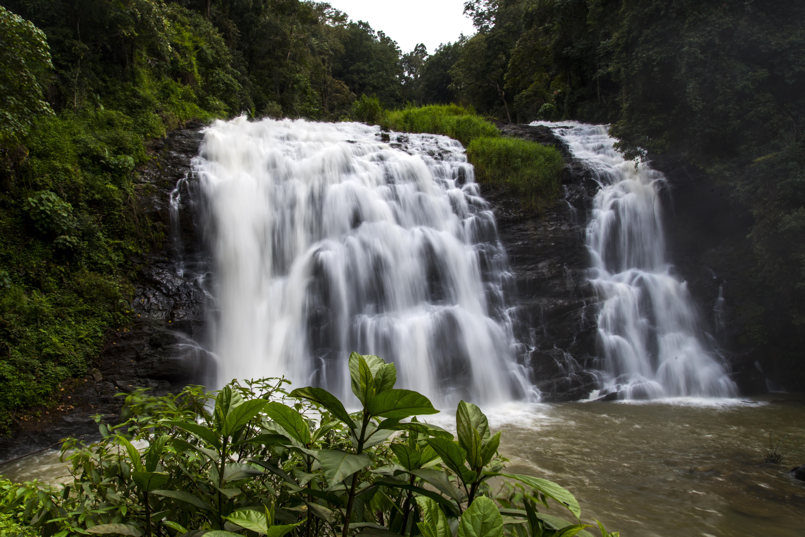
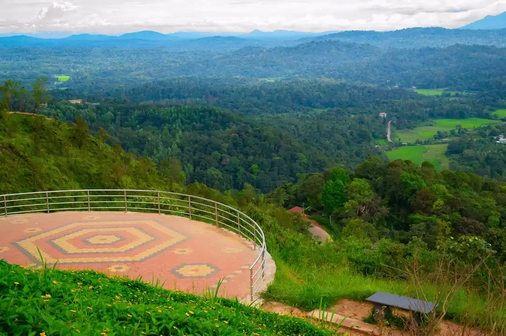

Changla Pass, at an altitude of 17,590 feet, is a high mountain pass in Ladakh, India, known for
being a gateway to
Pangong Lake and a popular route for bikers and tourists. It is considered third
highest motorable
road in the
world. The pass is strategically important it connects the Changtang
plateau to the rest of India
and provides vital
access for the Indian Army to the Pangong region.
1. High Altitude:
Changla Pass is situated at 17,590 feet (5,360 meters), making it one of the highest motorable
passes in the world.
2. Gateway to Pangong Lake:
It serves as a crucial transit point on the route from Leh to Pangong Tso, one of Ladakh's
most
famous lakes.
3. Strategic Importance:
The pass holds strategic significance due to its location near the Chinese border and its
role in
connecting the
Changtang plateau to the rest of India.
4. Military Presence:
The Indian Army maintains the pass and provides essential services like tea stalls for travelers.
5. Snowy Landscapes:
Due to its high altitude, snow can be found at Changla Pass even during the summer months.
6. Biker's Paradise:
Changla Pass is a favorite among bikers due to its challenging
terrain and stunning scenery.

Laxman Jhula and Ram Jhula are iconic suspension bridges in Rishikesh, India, known for their spiritual
significance and
scenic views. Both are pedestrian-friendly, but also allow for two-wheelers. Ram Jhula is longer than
Laxman Jhula.
Laxman Jhula is older, built in 1929, while Ram Jhula was constructed in 1986. They both connect
important spiritual
sites and are popular tourist destinations.
1. Mythological Significance:
Both bridges are named after characters from the Hindu epic Ramayana and are believed to be the
locations where Lord
Rama and his brother Lakshman crossed the Ganges River.
2. Iron Suspension Bridges:
Both are suspension bridges made of iron, offering stunning views of the Ganges River and surrounding
landscapes.
3. Pedestrian & Two-Wheeler Friendly:
While primarily for pedestrians, both bridges also allow for the passage of two-wheelers, though they
can get
congested.
4. Popular Tourist Attractions:
Laxman Jhula and Ram Jhula are major landmarks in Rishikesh, attracting tourists for sightseeing,
photography, and
spiritual exploration.
5. Access to Spiritual Centers:
The bridges provide access to various ashrams, temples, and other religious sites, making them integral
to the spiritual
experience of Rishikesh.

Triveni Ghat in Rishikesh is a significant Hindu pilgrimage site known for its spiritual atmosphere
and the confluence
of three holy rivers: the Ganges, Yamuna, the mythological Saraswati. It's
famous for its daily
Ganga Aarti ceremony
and is a popular place for taking a holy dip in the river.
1. Confluence of Rivers:
Triveni Ghat is the meeting point of the Ganges, Yamuna, and the mythical Saraswati River.
2. Spiritual Significance:
It's a highly revered place for Hindus, believed to be where Lord Krishna visited and is
considered
a place to wash away
sins.
3. Ganga Aarti Ceremony:
The daily evening Ganga Aarti, a Hindu ritual of worship with lamps, is a major attraction
at
Triveni Ghat.
4. Rituals and Ceremonies:
Pilgrims and visitors perform rituals, offer prayers, and take holy dips in the river.
5. Tourist Destination:
Triveni Ghat attracts both religious pilgrims and tourists interested in experiencing its
spiritual
ambiance and
witnessing the Aarti.
6. Mythological Importance:
The ghat is mentioned in Hindu mythology, including the Ramayana and Mahabharata,
and is considered
a cremation ground
for Lord Krishna.

Parmarth Niketan Ashram, located in Rishikesh, is a renowned spiritual haven known for its serene
atmosphere, extensive
gardens, and various spiritual practices. It's a large ashram with over 1,000 rooms, offering a range of
activities
including yoga, meditation, and the famous evening Ganga Aarti ceremony. The ashram emphasizes a clean
and pure
environment, with a focus on spiritual rejuvenation and holistic well-being.
1. Spiritual Hub:
Parmarth Niketan is a prominent center for yoga, meditation, and other spiritual practices. It attracts
pilgrims and
seekers from around the world.
2. Ganga Aarti:
The evening Ganga Aarti ceremony at Parmarth Niketan is a highlight, drawing large crowds to witness the
mesmerizing
ritual on the banks of the Ganges River.
3. Extensive Facilities:
The ashram boasts lush gardens, a charitable clinic, and residential rooms with modern amenities,
including attached
bathrooms and hot water.
4. Free Entry:
Entry to the ashram is free, although there are charges for accommodation and other services.
5. Rules and Guidelines:
Visitors are expected to adhere to certain rules, such as refraining from alcohol, drugs, and
non-vegetarian food, and
dressing modestly.

The Beatles Ashram, also known as Chaurasi Kutia, is a significant site in Rishikesh, India,
due to
its connection with
The Beatles and its role in popularizing Transcendental Meditation.
It's a place where the band
stayed and composed many
songs, and it features unique architecture
and vibrant graffiti art.
1. Historical Significance:
The Beatles stayed at the ashram in 1968 to learn Transcendental Meditation from Maharishi
Mahesh
Yogi, which
significantly influenced their music, particularly the "White Album".
2. Transcendental Meditation Hub:
The ashram, originally established by Maharishi Mahesh Yogi, served as a training center for
students learning
Transcendental Meditation.
3. Architectural Features:
The ashram is known for its 84 meditation huts (Chaurasi Kutia), designed to provide secluded
spaces
for
practitioners.
4. Artistic Expression:
The abandoned ashram has become a canvas for street artists, with vibrant murals and graffiti
art
adorning the walls and
buildings.
5. Tourist Attraction:
Despite being abandoned for a period, the ashram was officially opened to the public in 2015
and is
now a popular
tourist destination for Beatles fans, art enthusiasts, and those interested
in spiritual history.

Jumpin Heights, known for its bungee jumping and other adventure activities in Rishikesh, has a few key
things to
consider. It's the highest bungee jumping platform in India, offering a 83-meter jump. Safety is a
priority, with
experts ensuring a secure and thrilling experience. Besides bungee jumping, they also offer activities
like the Giant
Swing and Flying Fox. Jumpin Heights was founded by a former army officer to bring international safety
standards to
India.
1. Highest Bungee Jump in India:
Jumpin Heights boasts the highest bungee jumping platform in India, standing at 83 meters.
2. Focus on Safety:
The company emphasizes safety, with trained experts and international safety standards in place.
3. Other Activities:
Besides bungee jumping, they offer other adrenaline-pumping activities like the Giant Swing and Flying
Fox.
4. Rishikesh Location:
Jumpin Heights is located in Rishikesh, Uttarakhand, a popular destination for adventure sports.
5. Founded by a Veteran:
The company was established by a former army officer, ex-capt. Rahul Nigam, to introduce high-quality
safety practices
to India.

Neer Garh Waterfall, a popular destination near Rishikesh, is known for its tiered cascades and
lush
surroundings. Key
points include its accessibility via a short trek, multiple swimming holes,
and the opportunity to
enjoy nature and
refreshments in the area.
1. Multi-tiered Waterfall:
Neer Garh is known for its multiple tiers, with water flowing down the hillside in a series of
falls.
2. Trekking and Accessibility:
While a short trek is involved, reaching the waterfall is relatively easy, with a well-maintained
path suitable for
various fitness levels.
3. Swimming and Relaxation:
The waterfall offers several natural pools where visitors can swim and relax, enjoying the cool,
refreshing water.
4. Surrounding Scenery:
The waterfall is set amidst lush green forests and rolling hills, providing a picturesque backdrop
for visitors.
5. Refreshments and Facilities:
There are cafes and restaurants near the waterfall, offering options for refreshments and meals.
6. Best Time to Visit:
Early mornings are recommended to avoid crowds, and weekdays are generally less busy
than weekends.

River rafting is a popular adventure sport involving navigating an inflatable raft down a river, often
with rapids.
Important points to consider include safety precautions like wearing a life jacket and helmet,
understanding commands,
choosing the right season and outfitter, and being aware of your physical fitness level.
1. Safety First:
Always wear a life jacket and helmet, and listen carefully to the guide's instructions. Understand the
commands and what
to do if you fall out of the raft.
2. Choose the Right Outfitter and Season:
Opt for licensed and professional rafting outfitters with experienced guides. Select a time of year with
suitable
weather conditions (avoid monsoon season when rivers are swollen).
3. Understand Your Physical Limits:
Be honest about your swimming ability and any pre-existing health conditions (like back or neck pain)
that might be
affected by the activity.
4. Gear Up Properly:
Wear appropriate clothing and footwear, including a wet suit or splash jacket if needed. Bring
essentials like sunscreen
and a change of clothes.
5. Know the River and Rapids:
Familiarize yourself with the river's characteristics and the different grades of rapids (difficulty
levels) to choose a
suitable rafting experience.

Abbey Falls, also known as Abbi Falls, is a popular tourist destination in Coorg, Karnataka,
known
for its stunning
natural beauty and cascading waterfall.
1. Location and Surroundings:
The falls are located in the Western Ghats, surrounded by lush coffee and spice plantations,
including coffee, cardamom,
and pepper. It's about 10 kilometers from Madikeri town.
2. Waterfall Features:
Abbey Falls is a 70-foot waterfall where water cascades down a cliff into a pool and then joins
the
Kaveri River. The
falls are particularly impressive during the monsoon season when the
water flow is at its peak.
3. Tourist Activities:
Visitors can enjoy the scenic beauty, take a walk through the coffee and spice plantations,
and go
trekking in the
Sahyadri hills. A hanging bridge opposite the falls offers a unique vantage
point for viewing the
cascading water.
4. Accessibility:
While the falls are easily accessible by road, there's a walk down to the viewing point, which may
involve steps.
There's also parking available, and some facilities like paid bathrooms and tea stalls.
5. Best Time to Visit:
The monsoon season (July to October) is a popular time to visit, as the waterfall is at its most
powerful. However, be
prepared for slippery paths and potentially crowded conditions.

Raja's Seat, a garden and viewpoint in Madikeri, Coorg, offers stunning panoramic views, especially at
sunrise and
sunset. It's a popular spot for recreation, featuring a musical fountain, a toy train, and lush
greenery. Historically,
it served as a recreational spot for the Kodagu kings. Today, it's a must-visit destination for tourists
in Coorg.
1. Historical Significance:
Raja's Seat was a favorite recreational spot for the Kodagu kings, who ruled the region for over 200
years.
2. Scenic Views:
The garden is situated on a high vantage point, providing breathtaking views of the surrounding hills,
valleys, and the
setting sun.
3. Recreational Activities:
Raja's Seat features a musical fountain, a toy train, and well-maintained gardens, making it a great
place for
relaxation and family fun.
4. Popular Tourist Attraction:
It's a popular destination for both locals and tourists, especially during sunrise and sunset.
5. Gandhi Mantap:
The garden is located within the Gandhi Mantap, a memorial dedicated to Mahatma Gandhi.